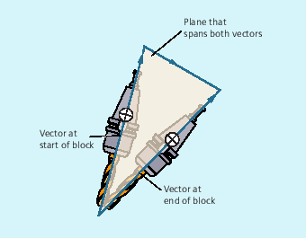

With ORIMKS, the movement executed by the tool depends on the machine kinematics. In the case of a change in orientation of a tool tip at a fixed point in space, linear interpolation takes place between the rotary axis positions.
With ORIWKS, the movement executed by the tool does not depend on the machine kinematics. With an orientation change with a fixed tool tip, the tool moves in the plane set up by the start and end vectors.
| Note |
ORIWKSOrientation movements in the singular setting area of the 5-axis machine require vast movements of the machine axes. (For example, with a rotary swivel head with C as the rotary axis and A as the swivel axis, all positions with A = 0 are singular.) |
To avoid overloading the machine axes, the velocity control vastly reduces the tool path velocity near the singular positions.
With the following machine data, the transformation can be parameterized in such a way that orientation movements close to the pole are put through the pole and rapid machining is possible:
$MC_TRAFO5_NON_POLE_LIMIT
$MC_TRAFO5_POLE_LIMIT
Singular positions are handled only with the machine data MD $MC_TRAFO5_POLE_LIMIT.
More information: Function Manual Transformations